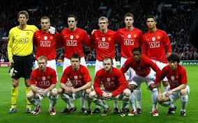

TOPOS FC TOPITOS
ÚLTIMO PARTIDO

20 - 40

ESTADISTICAS ESTA TEMPORADA
10
PARTIDOS
20
GOLES

10/02/25
PROXIMO PARTIDO
| Equipo | Partidos Jugados | Ganados | Perdidos | Empatados | Goles a Favor | Goles en Contra | Puntos Extra |
|---|
TOPOS FC TOPITOS |
|||||||||||
ÚLTIMO PARTIDO |
|||||||||||
20 - 40
|
|||||||||||
ESTADISTICAS ESTA TEMPORADA |
|||||||||||
10PARTIDOS |
20GOLES |
10/02/25PROXIMO PARTIDO |
|||||||||
|
|||||||||||
 |
|||||||||||